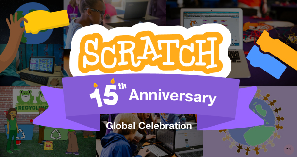

Scratch Visual Design & Illustration
Illustrations, graphics, and websites I have designed while at Scratch
OVERVIEW
In addition to my product design work for Scratch, I have also supported the organization in making graphics and illustrations for various events, reports, and social media.
Illustrations
Below are some of my favorite illustrations I have made for various projects, from the annual report to new community guidelines.

Scratch Events
While at Scratch, I have managed and produced the visual assets for two annual Scratch Conferences and Scratch's 15th Celebration. All of these events were fully virtual and held on platforms such as Swapcard and Welcome. These assets included themed graphics for workshops, banners, sponsorship packets, lower thirds, presenter zoom backgrounds, and more.
Scratch Conferences
Scratch Conference brings together Scratch educators, researchers, and enthusiasts from all over the world to discuss and share different ways of using Scratch. It was held on the Swapcard platform. I made the conference assets for 2021 and 2022.


Scratch Celebration
Scratch Celebration was an online event held on Scratch's "birthday" to celebrate Scratch's 15th anniversary. This event featured Scratch create-alongs, highlights of organizations and educators using Scratch, and trivia. I created a custom logo, made stage backgrounds for the livestream, and designed a sponsorship packet.
Annual Reports
I designed both the 2020 and 2021 annual reports for the Scratch Foundation. Most of my illustrations were produced for these reports, which live on the web. Each Annual report centers around a different theme and highlights the work our organization has done. We use a basic template for the web page that we build on and adapt for our needs. You can view the 2020 report here and the 2021 report here.
Below are a few of my favorite parts of these annual reports.